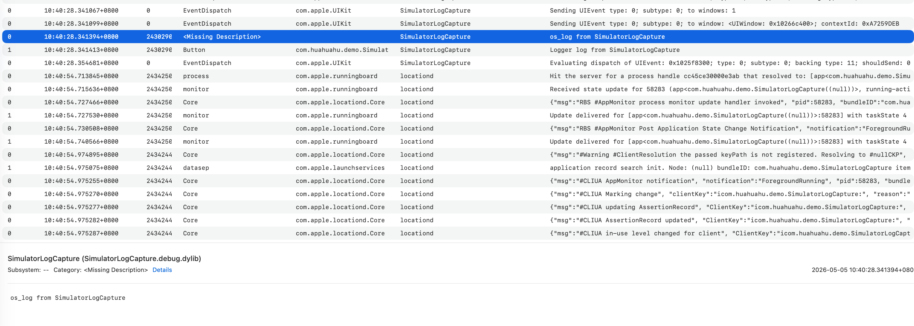
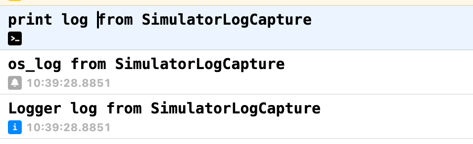

Investigation
在 Agentic Coding 中捕获 iOS Simulator 日志
这篇文章记录一次最小 SwiftUI demo 的实验：点击按钮后分别用
print、os_log 和 Logger
输出日志，再观察 agent 能否通过不同方式拿到这些日志。
Investigation
这篇文章记录一次最小 SwiftUI demo 的实验：点击按钮后分别用
print、os_log 和 Logger
输出日志，再观察 agent 能否通过不同方式拿到这些日志。
在 agentic coding 场景里，agent 通常不能直接盯着 Xcode Console。 如果 app 只是在 Simulator 中运行，哪种日志方式最容易被自动化工具捕获？
SimulatorLogCaptureiPhone 17 Pro Max，iOS 26.4com.huahuahu.demo.SimulatorLogCapturePrint LogsDemo 刻意保持简单：一个 SwiftUI 页面，一个按钮。点击按钮时，同时触发三种日志输出。
Button("Print Logs") {
print("print log from SimulatorLogCapture")
os_log("os_log from SimulatorLogCapture")
logger.info("Logger log from SimulatorLogCapture")
}
代码在 simulator-log-capture/SimulatorLogCapture/ContentView.swift。
项目由 XcodeGen 生成，并带有 .xcodebuildmcp/config.yaml
方便 agent 使用固定的 scheme 和 simulator。
Console app 可以选择 booted simulator 并按进程名过滤。它适合人工观察， 但不适合 agent 自动化记录结论。

从 Xcode 运行 app 时，debug console 能看到运行期输出。这个方式对开发者最直接， 但 agent 如果运行在终端中，通常不能稳定读取这个 UI 面板。

终端方式最适合 agentic coding，因为命令输出可以被保存、过滤和回写到结果文件。
本机 Xcode 的 simctl 没有直接的 log 子命令，
所以实际可用命令是通过 simctl spawn 在模拟器环境中执行
log stream。
--level info
第一次只用默认 log stream 时，能捕获到 os_log，
但没有看到 Logger.info。重新加上 --level info 后，
Logger.info 才出现在结果里。
xcrun simctl spawn F8AFBC61-0935-4C51-826E-E03D6DCD3D71 \
log stream \
--level info \
--predicate 'process == "SimulatorLogCapture"' \
--style compact这次捕获到的自定义日志是：
2026-05-05 11:15:11.384 Df SimulatorLogCapture[...] (SimulatorLogCapture.debug.dylib) os_log from SimulatorLogCapture
2026-05-05 11:15:11.384 I SimulatorLogCapture[...] [com.huahuahu.demo.SimulatorLogCapture:Button] Logger log from SimulatorLogCapturesimctl spawn ... log stream 是本次 agent 自动化最可复现的方式。Logger.info，命令里应加 --level info。os_log 在默认流里已经可见。print 没有在 simctl log stream 结果中作为统一日志出现。xcrun simctl spawn booted log stream \
--level info \
--predicate 'process == "SimulatorLogCapture"' \
--style compact
如果有多个 simulator booted，建议把 booted 换成 demo 配置里的 simulator UUID。